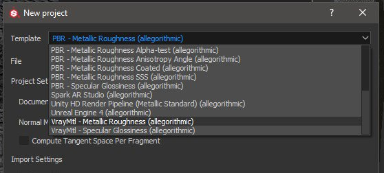
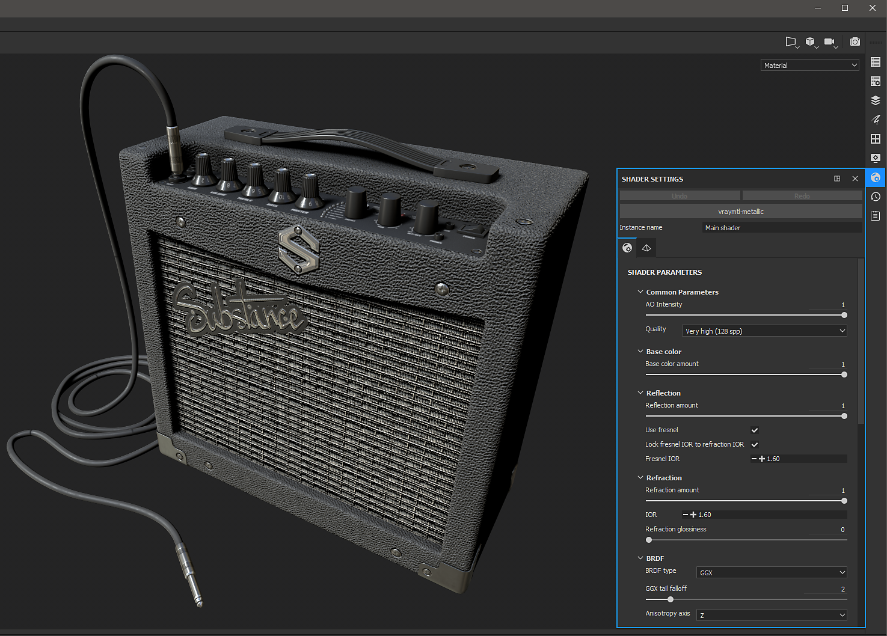
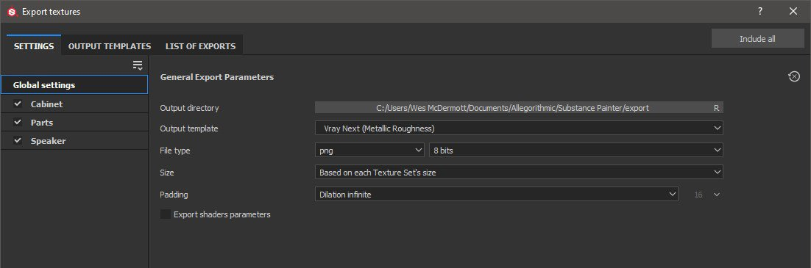
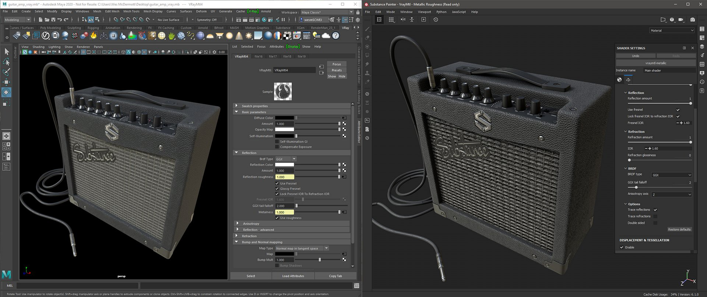

Substance Painter 2020.1 (6.1.0) ships with VrayMtl shaders for both metallic and specular workflows. You can setup your Substance Painter project using the VrayMtl template, which will configure your viewport shader.

Under the Shader Settings, you can configure the Vray shader for working with VrayMtl.
If your project was setup to use UV Tile UDIM Legacy. Use the Vray Next UDIM output template.

To export textures for rendering in Vray Next, choose the Vray Mtl Output template.

| Substance Painter Export | VRayMtl |
|---|---|
| BaseColor | (Maya) Diffuse Color (Amount = 1.0) (3ds Max) Diffuse |
| Roughness | (Maya) Reflection / Roughness (BRDF = GGX) + (Use Roughness enabled) (3ds Max) Roughness → BRDF/ Use GGX and enable Use roughness |
| Metallic | (Maya) Reflection/ Metalness (3ds Max) Metalness |
| Normal | (Maya) Bump and Normal Mapping / Map (Map Type = Normal in Tangent Space) (3ds Max) Bitmap → Normal |
| Height | (Maya) Displacement Shader / displacement (3ds Max) Object modifier → VrayDisplacementMod → Tex Map |
| Emissive | Self-Illumination |
| Transmissive | (Maya) Subsurface Scattering / Translucency Color |
| AnisotropyAngle | (Maya) Anisotropy / Anisotropy Rotation (3ds Max) BRDF / Rotation |
| AnisotropyLevel | (Maya) Anisotropy / Anisotropy (3ds Max) BRDF / Angle |
| Substance Painter Export | VRayMtl |
|---|---|
| Diffuse | (Maya) Diffuse Color (Amount = 1.0) (3ds Max) Diffuse |
| Specular | (Maya) Reflection / Reflection Color (Amount = 1.0) (3ds Max) Reflect |
| Glossiness | (Maya) Reflection / Roughness (BRDF = GGX) + (Use Roughness enabled) (3ds Max) Glossiness → BRDF / Use GGX and enable Use glossiness |
| Normal | (Maya) Bump and Normal Mapping / Map (Map Type = Normal in Tangent Space) (3ds Max) Bitmap → Normal |
| Height | (Maya) Displacement Shader / displacement (3ds Max) Object modifier → VrayDisplacementMod → Tex Map |
| Emissive | Self-Illumination |
| Transmissive | (Maya) Subsurface Scattering / Translucency Color |
| AnisotropyAngle | (Maya) Anisotropy / Anisotropy Rotation (3ds Max) BRDF / Rotation |
| AnisotropyLevel | (Maya) Anisotropy / Anisotropy (3ds Max) BRDF / Angle |
Maps that represent data will need to be interpreted correctly. Please see the Color Management page for more information.
This example show the Substance Painter viewport using the Vray Metallic/Roughness shader and the Vray render using Maya.
